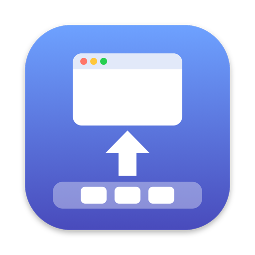

One at a time
Each press minimizes the front window, then the one behind it, across every app.

ELEGANCE + DOCK
Windows, elegantly into the Dock.
A small menu bar app for Mac. ⌘M sends windows to the Dock one at a time, and ⇧⌘M brings them back, most recent first.
Windows leave from the front, one by one, across every app. They come back in the order they left.
Click, or press and hold.
It does one thing, and stays out of the way.
Each press minimizes the front window, then the one behind it, across every app.
The most recently minimized window returns first. No searching the Dock.
Keep holding a shortcut to minimize or restore one window every 0.25 seconds.
Change either shortcut. EleDock shows which running apps use the same keys.
When an excluded app is in front, its own shortcuts work as usual and its windows are left alone.
See minimized windows and restore them all at once. It can open at login and checks for updates on its own.
Download EleDock.dmg and open it. EleDock is notarized by Apple.
Double-click EleDock in the window. It asks to move itself to the Applications folder, then whether to eject the installer disk and move the DMG file to the Trash.
Turn on EleDock in System Settings › Privacy & Security › Accessibility. This lets it minimize and restore windows of other apps.
English, Korean, and Japanese are built in.